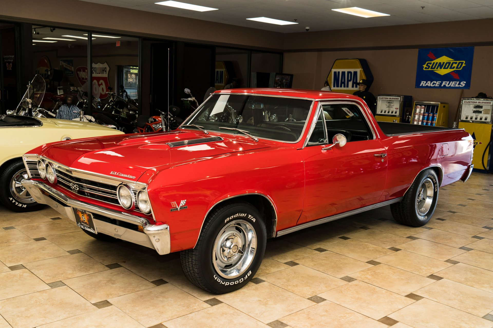

First, I love to ski! The feeling of flying down a mountain or perfectly hitting a jump is something that I've never been able to find anywhere else. That combined with the serene surroundings of the snowy mountain creates an activity that is truly special.
I also play basketball for my school. While we are a smaller school, I enjoy the enviornment that the team creates. It's also been a wonderful opportunity to get to know the lower classman and be a positive mentor.
Lastly, I am currently restoring a 1967 El Camino. It will be a beautiful car once it is completed. The current step is finishing getting the motor running smoothly, and then I get to build the interior. I'm very excited for it.
|
What it (hopefully) will look like |
V
